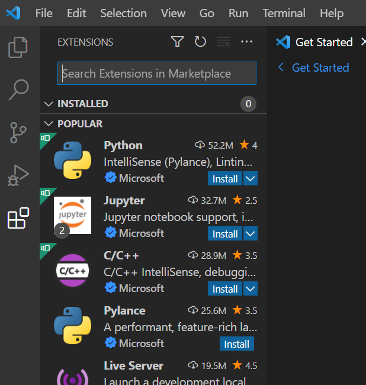

4. Visual Studio Codeの環境を構築する
- 無料
- そもそも高機能（とくに統合ターミナルとコードフォーマットが便利）
- さらに拡張機能による拡張性が極めて高い
- ユーザー数が多いことから、エラーが発生したときになんとか解決することが多い。
以上の点からここではVisual Studio Codeをインストールします。
4.1. Visual Studio Codeのインストール
-
Visual Studio Code にアクセスする。
-
Windowsをクリックし、ダウンロードして開く。

-
同意するをクリックし、次へをクリック。

-
次へをクリック。

-
次へをクリック。
-
すべてチェックを入れ、次へをクリック。
-
インストールをクリック。

-
完了をクリック。
以上でVisual Studio Codeのインストールが完了しました。
4.2. Visual Studio Codeの日本語化
-
Extensionsをクリック。
このメニューで拡張機能のインストールを行うことができます。

-
japaneseと検索、Japanese Language Pack for VS Codeを選択し、Installをクリック。
-
左下の通知のRestartをクリックして、VS Codeを再起動。

以上でVS Codeの日本語化が完了しました。

4.3. C++開発の環境を構築する
デフォルトのままだとコードの色付け位しかされないため、拡張機能を追加します。
主に追加される機能は以下の通りです。
- 関数名や変数名の自動補完
- コードフォーマット
- 強化されたコードの色付け
- クイック情報
- 定義に移動
- Extensionsをクリックし、c++と検索し、C/C++ Extension Packをインストール。

このように表示されたら導入が完了しています。

4.4. Git関連の拡張機能をインストール
VS CodeにGit関連のプラグインをインストールすると、ほとんどのことはVS Code内で完結できます。
4.4.1. Git Graph
リポジトリのグラフをわかりやすくする。
- git graphと検索し、インストール。

4.4.2. GitLens
ソースコードの行に誰がいつコードを変更したのかを表示する。
- gitlensと検索し、インストール。

最終更新日: 2022-03-14 22:41:31
作成した: 2022-03-14 22:41:31
作成した: 2022-03-14 22:41:31